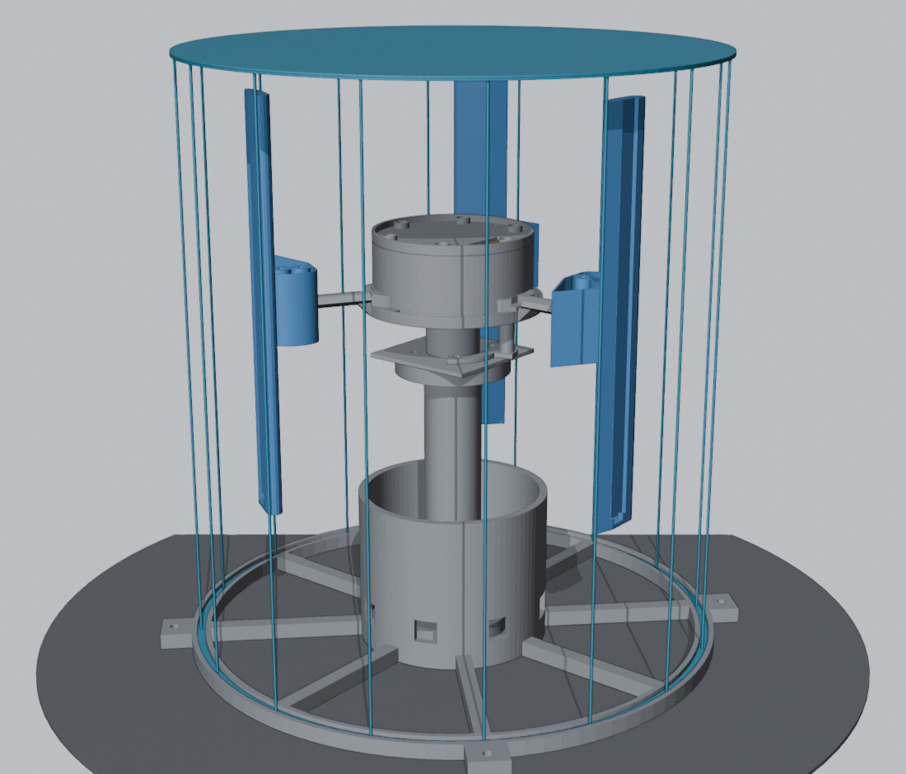

Universidade Tecnológica Federal do Paraná · Câmpus Pato Branco
Engenharia de Computação · Oficina de Integração
Apresentação do pré-projeto
Hologram
Orbiter
Display volumétrico por persistência de visão com validação por portões de ensaio
- Pedro Mariano dos Santos
- Marlon Mezomo Gotardo
- Rodrigo Rodriguez Tato Gama da Silva
Orientador: Prof. Gustavo Weber Denardin
Pato Branco · setembro de 2026
Introdução§ 1 e 2.1
A imagem é escrita no ar, uma coluna por vez
O olho integra a luz por dezenas de milissegundos. Uma coluna de LEDs deslocada depressa deixa de ser vista como coluna: girando, ela varre um cilindro e escreve a imagem — um swept-volume display [1, 2].
Cada ponto do cilindro é reescrito(1)
Introdução§ 1
Os “ventiladores holográficos” cintilam
A versão comercial do princípio é vendida como “ventilador holográfico”, embora não haja holografia envolvida.
- São produtos fechados: não publicam rotação, corrente, massa das pás nem critério de contenção.
- Os modelos mais baratos giram uma ou duas hélices entre 450 e 900 rpm e entregam de 15 a 30 imagens por segundo.
- Essa faixa fica abaixo do limiar de fusão de cintilação da visão periférica [3, 4]: a imagem pisca quando o observador não olha diretamente para o aparelho.
Taxa de imagem, em hertz
Introdução§ 1
O desafio não é a eletrônica
150N
de força centrífuga em cada painel de 42 g a 1800 rpm — como pendurar 15 kg na ponta de uma peça impressa em ABS.
27,6J
de energia cinética armazenada no rotor, com os painéis passando a 18,9 m/s.
a potência aerodinâmica cresce com o cubo da rotação e do raio: mais taxa de imagem custa, de forma não linear, corrente e temperatura.
Por que este projeto
Formativo
Integra CAD paramétrico e projeto mecânico, acionamento e eletrônica de potência, firmware de tempo real e metodologia de ensaio. A escolha do raio é, ao mesmo tempo, óptica, térmica e estrutural.
Mensurável
Os erros de projeto se manifestam fisicamente: 0,1 g de desbalanceamento aparece na FFT do acelerômetro; 0,5 mm de erro no raio de um painel vira imagem tripla.
Aberto
Cotas, memória de cálculo, critérios de aceite e o gerador paramétrico do CAD ficam publicados — reprodução e continuidade que os equivalentes comerciais não oferecem.
Fundamentação teórica§ 2.1 e 2.2
Três painéis a 1800 rpm entregam 90 Hz
Taxa de imagem × rotação
1 painel2 painéis3 painéiscomerciais
(1)
A fusão de cintilação ocorre entre 40 e 60 Hz na fóvea [3] e se aproxima de 90 Hz na retina periférica [4]. O display é visto de relance e fora do eixo: o alvo fica no limite superior.
3 painéis × 30 voltas/s = 90 Hz. Com um só painel, seriam necessários 5400 rpm.
(2)
São 180 colunas a 90 Hz: o firmware sustenta 16,2 mil atualizações de coluna por segundo, cada uma com 29 pixels RGB da fita HD107S (144 LED/m, 201 mm de altura).
Fundamentação teórica§ 2.3 e 2.4
Com a taxa fixa, a corrente cresce com r³
Corrente de fase × raio, a 1800 rpm
(3)
(5)
Com fixo, e ; logo:
(6)
As perdas crescem com (7): a temperatura sobe ≈ com . De 130 para 100 mm, a potência cai para (100/130)³ = 0,455 — a diferença entre v2.1 e v3.0 está no raio, não no motor.
v2.0 1200 rpm · r = 130 mm
60 Hz, com cintilação perceptível.
v2.1 1800 rpm · r = 130 mm
90 Hz, mas ~10 A e 101 °C no motor: inviável; reprovada em 24 pontos.
v3.0 1800 rpm · r = 100 mm
90 Hz com 4,95 A e 46 °C previstos.
Fundamentação teórica§ 2.5 e 2.6
A 1800 rpm, o rotor é um problema mecânico
Força centrífuga
(8)
A carga é estática no referencial do painel: com eixo vertical, nem ela nem o peso mudam de direção, e não há ciclagem a 30 Hz. O risco é a fluência do ABS sob carga e calor [10], não a fadiga.
Energia e contenção
(9)
Com = 1,55 g·m² e = 18,9 m/s, um painel que se solte carrega ≈ 7,9 J. Por isso a contenção física é montada antes de qualquer ensaio de rotação.
Balanceamento
[8]
Desbalanceamento residual admissível pelos procedimentos da ISO 21940-11. Na prática, as massas dos três painéis precisam casar dentro de 0,084 g.
Dinâmica da torre
(10, 11)
O CG do conjunto girante fica 31 mm acima do tubo e a rigidez cai de ≈ 50 para ≈ 29 N/mm. Fora da ressonância, mas a margem precisa ser medida: daí o ensaio de impacto.
Fundamentação teóricaTabela 1
Ponto de operação
Grandezas de projeto e derivadas. Cada valor aponta para a sua origem: decisão de projeto, equação, CAD ou norma.
Cinemática
- Raio do plano médio,
- 100 mm
- projeto
- Rotação
- 1800 rpm
- projeto
- Velocidade angular,
- 188,5 rad/s
- 2πn
- Painéis,
- 3
- projeto
Imagem
- Taxa de imagem
- 90 Hz
- Eq. (1)
- Resolução
- 29 × 180
- Eq. (2)
- Envelope da imagem
- Ø208 × 201 mm
- CAD
Acionamento · previsto
- Corrente de fase
- 4,95 A
- Eq. (6)
- Potência de entrada
- 16,2 W
- fonte
- Temperatura do motor
- 46 °C
- Eq. (7)
Mecânica
- Força centrífuga por painel
- 150 N
- Eq. (8)
- Energia do rotor
- 27,6 J
- Eq. (9)
- Massa do rotor
- 278,6 g
- CAD
- Desbalanceamento admissível
- 8,4 g·mm
- ISO [8]
- Frequência natural da torre
- 46 Hz
- Eq. (11)
Objetivos§ 3
Objetivos
Objetivo geral
Projetar, construir e validar experimentalmente um display volumétrico por persistência de visão — três painéis de LEDs endereçáveis a 1800 rpm, imagem cilíndrica de Ø208 × 201 mm com 29 × 180 pixels a 90 Hz — operando de forma estável e contida nos limites térmicos, elétricos e de vibração, com toda cota e grandeza rastreável a um datasheet, a uma medição de bancada ou a uma linha de cálculo publicada.
Objetivos específicos e o portão de cada um
- G0Congelar o ponto de operação pelo balanço entre taxa de imagem (1), arrasto (3) e limite térmico (7).
- G0Entregar o CAD paramétrico com verificação automatizada da malha exportada contra a especificação.
- G1Fabricar e qualificar as peças: massa ≤ 45 g por painel, Δm ≤ 0,084 g e raio de 100 ± 0,1 mm.
- G2Montar e balancear o rotor, com a contenção física montada antes de qualquer giro.
- G3Aprovar os quatro bloqueadores de rotação, medidos com instrumentação de bancada.
- G4Integrar a cadeia óptica e o firmware: 16,2 mil colunas por segundo sem acúmulo de erro de fase.
- G5Validar a qualidade visual e documentar operação, ensaios e limitações conhecidas.
Metodologia§ 4.1 e 4.5
Arquitetura do protótipo

Estrutura fixa
- 1Base com baia e abas de grampoImpressa numa peça única com a torre, em 12 a 18 h.
- 2TorreTubo engastado, com rigidez k ≈ 50 N/mm.
- 3Chapa de alumínio e motor A2212 920KVAcionado por ESC BLHeli_S; o ímã do sensor de índice também fica na parte fixa.
Rotor
- 4Aranha com baia de eletrônicaESP32-C3, regulador de 5 V, deslocador de nível, capacitor de desacoplamento, bateria LiFePO4 e sensor Hall A3144.
- 5Três painéis a 120°Fita HD107S de 144 LED/m alojada no canal: 29 LEDs por painel.
Referência
- 6Invólucro encomendado, Ø266 mmAparece só como referência de encaixe; está fora do escopo.
Metodologia§ 4
Seis fases separadas por portões numéricos
Um portão é uma condição numérica: a fase seguinte só começa quando ele é atendido. As falhas relevantes aparecem primeiro como número fora da faixa, e só depois como peça quebrada.
F0
Projeto e aquisição
G0CAD verificado: 54 critérios da especificação; cupons conferidos na fita LED real.
F1
Fabricação
G1Massa ≤ 45 g por painel, Δm ≤ 0,084 g, raio de 100 ± 0,1 mm e altura na tolerância.
F2
Montagem
G2Rotor gira à mão sem rocamento; contenção montada.
F3
Ensaios de rotação
G3Bloqueadores A a D: ≤ 20 W, < 55 °C, ≤ 0,20 g a 30 Hz e 10 partidas em 10.
F4
Integração óptica
G4Imagem de teste estável a 1800 rpm.
F5
Validação visual
G590 Hz sem tremulação em sacada e operação contínua estável.
Nenhum LED antes de G3.Os ensaios de maior risco físico, com 27,6 J no rotor, rodam com o mínimo de material embarcado.
Metodologia§ 4.1 a 4.3
Do modelo paramétrico ao rotor balanceado
Projeto paramétrico e verificação do CAD
- Um programa lê um único arquivo de parâmetros e gera base, torre, aranha, painéis, tampa, suporte do ímã e cupons de folga: mudar o raio propaga para todas as interfaces.
- A malha exportada é medida contra os critérios da especificação, e uma checagem de colisões cobre a montagem.
- Traçado de raios confirma furos vazados e canais sem membranas — falha silenciosa da geração booleana, que já fechou furos de parafuso e deixou 0,05 mm de material sob a flange da torre.
Critério54 critérios atendidos e cupons conferidos contra a fita LED real.
Fabricação e qualificação dimensional
- Dois cupons, da junta painel/longarina e de uma fatia do canal da fita, custam 25 min e evitam refazer peças de 208 mm por folga errada.
- Os três painéis saem da mesma mesa, do mesmo lote de filamento e com os mesmos parâmetros.
- Paquímetro de 0,01 mm e balança de 0,01 g: uma de 0,1 g mediria exatamente o erro que deveria detectar.
- Peça fora de tolerância é reimpressa, não ajustada.
CritérioMassa, Δm, raio e altura dentro das tolerâncias.
Montagem e balanceamento
- Ordem: motor na chapa, chapa na flange, aranha no eixo e painéis nas longarinas.
- O colar Ø8 do eixo impede a arruela M6 comum: arruela Ø20 × Ø8,5 cortada da chapa, porca M6 fina e trava química a 0,6 N·m — 500 N de aperto para os 22 N necessários, com 1,9 MPa no ABS.
- Casar massas não casa momentos: 0,5 mm de diferença de CG em 42 g vale 21 g·mm, 2,5 vezes o admissível. O bloqueador C fecha essa conta.
CritérioRotor gira à mão sem rocamento; contenção montada.
Metodologia§ 4.4 · Tabela 2
Bloqueadores de rotação, sem LEDs a bordo
Cada bloqueador tem critério numérico, método, limiar de aborto e contingência definidos antes do ensaio. Juntos, os quatro formam o portão G3.
| Grandeza medida | Critério | Como se mede e por quê | |
|---|---|---|---|
| A | Potência de entrada a 1800 rpm | ≤ 20 W | Patamares de 600, 1000, 1400 e 1800 rpm, 2 min cada, lendo tensão e corrente na fonte. Confere o arrasto da Eq. (3), a maior incerteza do projeto. |
| B | Temperatura do motor, 10 min | < 55 °C | Termopar tipo K na carcaça, em regime contínuo. |
| Crescimento da ponta, 1 h | < 0,5 mm | Deflexão da ponta do painel após uma hora: teste direto da fluência. | |
| C | Vibração residual a 30 Hz | ≤ 0,20 g | Acelerômetro e FFT, com o rotor em operação. |
| Separação entre e 30 Hz | confirmada por FFT | Ensaio de impacto com massa fictícia de 280 g na altura dos painéis, para medir a Eq. (11). | |
| D | Partidas bem-sucedidas | 10 de 10 | O rotor tem = 1,55 g·m², cerca de cem vezes a inércia de uma hélice, |
| Pico de corrente na fonte, na rampa | ≤ 4,6 A | regime para o qual controladores sem sensor não são sintonizados. |
Metodologia§ 4.5 e 4.6
Integração óptica, firmware e validação visual
Duas armadilhas elétricas tratadas: o A3144 não opera de forma confiável em 3,3 V [11], e 3,3 V não aciona com margem as entradas de relógio e dados da fita — daí o deslocador de nível. Ao fim, o rotor é rebalanceado com a massa real da eletrônica.
Firmware de varredura
- Zera a fase a cada pulso de índice: o erro não se acumula.
- Interpola a posição angular pelo tempo decorrido na volta.
- O BLHeli_S não fecha malha de rotação: a variação entre voltas precisa ficar em ≈ 0,14 % para errar menos de ¼ de coluna.
CritérioImagem de teste estável a 1800 rpm.
Validação visual
Sala escura; grade fina, texto pequeno e bordas verticais; a 1, 2 e 3 m, com olhar fixo e em sacada; câmera a 240 quadros/s.
| Imagem tripla | → | raio ou altura diferentes entre painéis |
| Deslocamento angular | → | folga na junta |
| Borda serrilhada | → | jitter de fase no sensor de índice |
CritérioImagem estável, três varreduras coincidentes e sem cintilação periférica.
Cronograma§ 5 · Figura 3
Nove semanas, de 08/09 a 09/11/2026
Caminho crítico: base e torre integradas — 12 a 18 h numa peça única, não paralelizável, que só começa depois de G1, porque uma correção de raio mudaria a base junto.
Folga: as compras (semana 1) correm em paralelo à impressão (semanas 2 e 3). Se bateria ou regulador atrasarem, as fases 1 a 3 seguem: nada em G3 depende da eletrônica de bordo.
Resultados esperados§ 6
Sucesso é atender a todos os critérios juntos
O projeto terá êxito quando, ao mesmo tempo
- a imagem se formar a 90 Hz sem tremulação perceptível em sacada;
- a potência de entrada ficar em até 20 W, com o motor estabilizando abaixo de 55 °C;
- a vibração a 30 Hz ficar em até 0,20 g, sem crescimento;
- o rotor partir 10 vezes em 10;
- toda grandeza for rastreável a um datasheet, a uma medição ou a uma linha de cálculo publicada.
Riscos de maior impacto
| Risco | Onde aparece | Resposta prevista |
|---|---|---|
| Arrasto real acima do estimado | Potência acima de 20 W no bloqueador A | Carenagem do cubo antes de qualquer redução de rotação |
| Fluência do ABS | Crescimento da ponta no bloqueador B | Medida diretamente, antes de fechar G3 |
| Falha de partida do controlador sem sensor | Bloqueador D | Rampa mais longa e ajuste das proteções do BLHeli_S |
Se um critério não for atendido, a resposta não é forçar a operação: reduzir a rotação, substituir o componente crítico ou revisar a geometria, na ordem de tentativa descrita no plano de ensaios.
Referências
Obras citadas na proposta
- BLUNDELL, B. G.; SCHWARZ, A. J. Volumetric Three-Dimensional Display Systems. New York: Wiley, 2000.
- FAVALORA, G. E. Volumetric 3D displays and application infrastructure. Computer, IEEE, v. 38, n. 8, p. 37–44, 2005.
- KELLY, D. H. Visual responses to time-dependent stimuli. I. Amplitude sensitivity measurements. Journal of the Optical Society of America, v. 51, n. 4, p. 422–429, 1961.
- TYLER, C. W. Analysis of visual modulation sensitivity. II. Peripheral retina and the role of photoreceptor dimensions. Journal of the Optical Society of America A, v. 2, n. 3, p. 393–398, 1985.
- WHITE, F. M. Fluid Mechanics. 7. ed. New York: McGraw-Hill, 2011.
- HOERNER, S. F. Fluid-Dynamic Drag. Bakersfield: edição do autor, 1965.
- HENDERSHOT, J. R.; MILLER, T. J. E. Design of Brushless Permanent-Magnet Machines. Oxford: Motor Design Books, 2010.
- INTERNATIONAL ORGANIZATION FOR STANDARDIZATION. ISO 21940-11: Mechanical vibration — Rotor balancing — Part 11: Procedures and tolerances for rotors with rigid behaviour. Genebra, 2016.
- RAO, S. S. Mechanical Vibrations. 6. ed. Harlow: Pearson, 2018.
- ASHBY, M. F. Materials Selection in Mechanical Design. 5. ed. Oxford: Butterworth-Heinemann, 2016.
- ALLEGRO MICROSYSTEMS. A3141/2/3/4 Sensitive Hall-Effect Switches for High-Temperature Operation — Datasheet. Manchester, NH, 2019.
Hologram Orbiter · apresentação do pré-projeto
Oficina de Integração · UTFPR Câmpus Pato Branco
Obrigado pela atenção
Perguntas?
Projeto, construção e validação por portões numéricos: nenhuma fase avança sem o seu critério.
- Pedro Mariano dos Santos
- Marlon Mezomo Gotardo
- Rodrigo Rodriguez Tato Gama da Silva
Orientador: Prof. Gustavo Weber Denardin